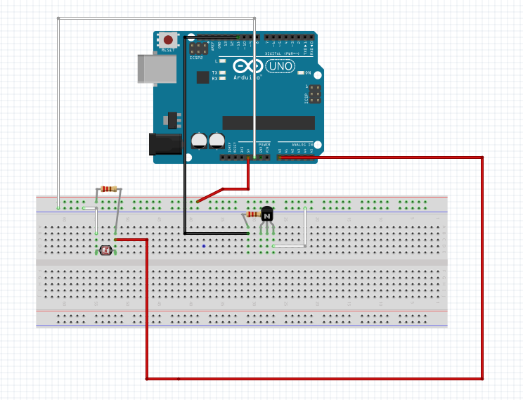
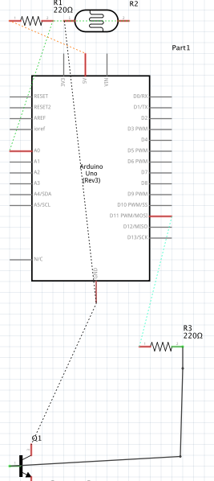
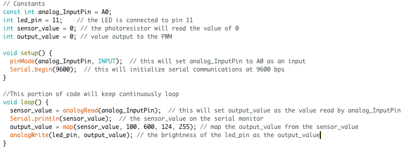

Assignment 4: High(er) Voltage and Transistors!
By placing my finger on the photoresistor, the LED strip will go from dim to bright!

By placing my finger on the photoresistor, the LED strip will go from dim to bright!
 
Through the calculation below, it shows how much current will flow through the transistor. As I only use 63 LEDs from the LED strip, it uses a smaller amount of watts compared to the 18 watts that typically go through 300 LEDs. I chose to use 10k resistor for safety purposes. As I was using power from both the outlet, and 5v on the arduino, 10k was the safest option to ensure my lights did not burn out.
(300 LEDs) / (18 watts) = (63 LEDs) / (i watts)
i = 3.78 watts V = 5 - 1.8(V drop) = 3.2v 3.2 = 0.02 x R(ohms) R = 3.2/0.02 = 160(ohms)